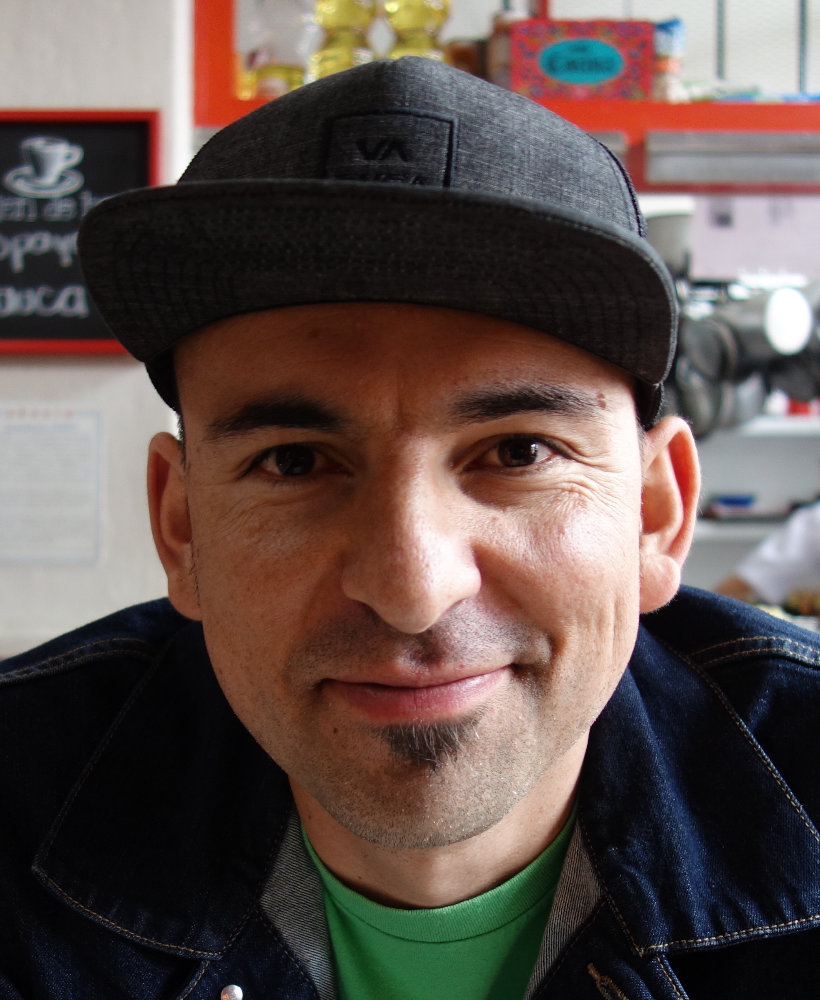

federico ardila
matemático
professor . san francisco state university
profesor adjunto . universidad de los andes . colombia
. research .
teaching .
society .
outreach .
cv .
interviews .
other .
| 
|
(Photo: May-Li Khoe)
I am a mathematician working in combinatorics and its connections to geometry, algebra, topology, and applications.
I work towards fostering an increasingly just, equitable, and welcoming community of mathematicians that benefits from our differences and serves the needs of all communities.